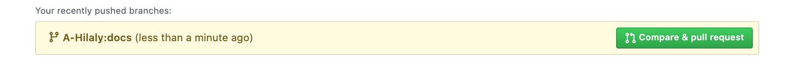

Setup¶
We walk you now through the setup to start contributing to the AWS Controller for Kubernetes (ACK) project. No matter if you're contributing code or docs, follow the steps below to set up your development environment.
Issue before PR
Of course we're happy about code drops via PRs, however, in order to give us time to plan ahead and also to avoid disappointment, consider creating an issue first and submit a PR later. This also helps us to coordinate between different contributors and should in general help keeping everyone happy.
Prerequisites¶
Please ensure that you have properly installed Go.
Go version
We recommend to use a Go version of 1.15 or above for development.
Fork upstream repositories¶
The first step in setting up your ACK development environment is to fork the upstream ACK source code repositories to your personal Github account.
There are three common upstream repositories you should fork first:
github.com/aws-controllers-k8s/runtimeis the core ACK runtime and typesgithub.com/aws-controllers-k8s/code-generatoris the ACK code generatorgithub.com/aws-controllers-k8s/test-infracontains the testing scripts
prefix ACK forked repos with 'ack-'
When I fork repositories to my personal Github account, I tend to prefix
the repositories with a common string for grouping purposes. For ACK source
repositories that I forked from the github.com/aws-controllers-k8s Github
Organization, I prefix those repositories with "ack-". For example, when I
forked the github.com/aws-controllers-k8s/code-generator repository to my
github.com/jaypipes personal space on Github, I immediately renamed the
forked repo to github.com/jaypipes/ack-code-generator. This makes it easier
to quickly filter repositories that are forked from the
github.com/aws-controllers-k8s Github Organization.
After forking the above common repositories, fork the upstream service
controller repositories that you wish to work on or test out. The upstream
service controller repositories are in the github.com/aws-controllers-k8s
Github Organization and follow a naming schema of $SERVICE_ALIAS-controller.
So, if you wanted to work on the S3 service controller, you would fork the
github.com/aws-controllers-k8s/s3-controller source repository to your
personal Github space.
Ensure source code organization directories exist¶
Make sure in your $GOPATH/src that you have directories for the
aws-controllers-k8s organization:
mkdir -p $GOPATH/src/github.com/aws-controllers-k8s
git clone forked repositories and add upstream remote¶
For each of your forked repositories, you will git clone the repository into
the appropriate folder in your $GOPATH. Once git clone'd, you will want to
set up a Git remote called "upstream" (remember that "origin" will be pointing
at your forked repository location in your personal Github space).
You can use this script to do this for you:
GITHUB_ID="your GH username"
# Set this to "" if you did NOT take my advice above in the tip about prefixing
# your personal forked ACK repository names with "ack-"
ACK_REPO_PREFIX="ack-"
# Clone all the common ACK repositories...
COMMON="runtime code-generator test-infra"
for REPO in $COMMON; do
cd $GOPATH/src/github.com/aws-controllers-k8s
git clone git@github.com:$GITHUB_ID/$ACK_REPO_PREFIX$REPO $REPO
cd $REPO
git remote add upstream git@github.com:aws-controllers-k8s/$REPO
git fetch --all
done
# Now clone all the service controller repositories...
# Change this to the list of services you forked service controllers for...
SERVICES="s3 sns ecr"
for SERVICE in $SERVICES; do
cd $GOPATH/src/github.com/aws-controllers-k8s
git clone git@github.com:$GITHUB_ID/$ACK_REPO_PREFIX$SERVICE-controller $SERVICE-controller
cd $SERVICE-controller
git remote add upstream git@github.com:aws-controllers-k8s/$SERVICE-controller
git fetch --all
done
Create your local branch¶
Next, you create a local branch where you work on your feature or bug fix.
Let's say you want to enhance the docs, so set BRANCH_NAME=docs-improve and
then:
git fetch --all && git checkout -b $BRANCH_NAME upstream/main
Commit changes¶
Make your changes locally, commit and push using:
git commit -a -m "improves the docs a lot"
git push origin $BRANCH_NAME
With an example output:
Enumerating objects: 6, done.
Counting objects: 100% (6/6), done.
Delta compression using up to 8 threads
Compressing objects: 100% (4/4), done.
Writing objects: 100% (4/4), 710 bytes | 710.00 KiB/s, done.
Total 4 (delta 2), reused 0 (delta 0)
remote: Resolving deltas: 100% (2/2), completed with 2 local objects.
remote: This repository moved. Please use the new location:
remote: git@github.com:$GITHUB_ID/aws-controllers-k8s.git
remote:
remote: Create a pull request for 'docs' on GitHub by visiting:
remote: https://github.com/$GITHUB_ID/aws-controllers-k8s/pull/new/docs
remote:
To github.com:a-hilaly/aws-controllers-k8s
* [new branch] docs -> docs
Create a pull request¶
Finally, submit a pull request against the upstream source repository.
Use either the link that show up as in the example above or to the upstream source repository and there open the pull request as depicted below:

We monitor the GitHub repo and try to follow up with comments within a working day.
Next Steps¶
After getting familiar with the various ACK source code repositories, now learn how to build an ACK service controller.